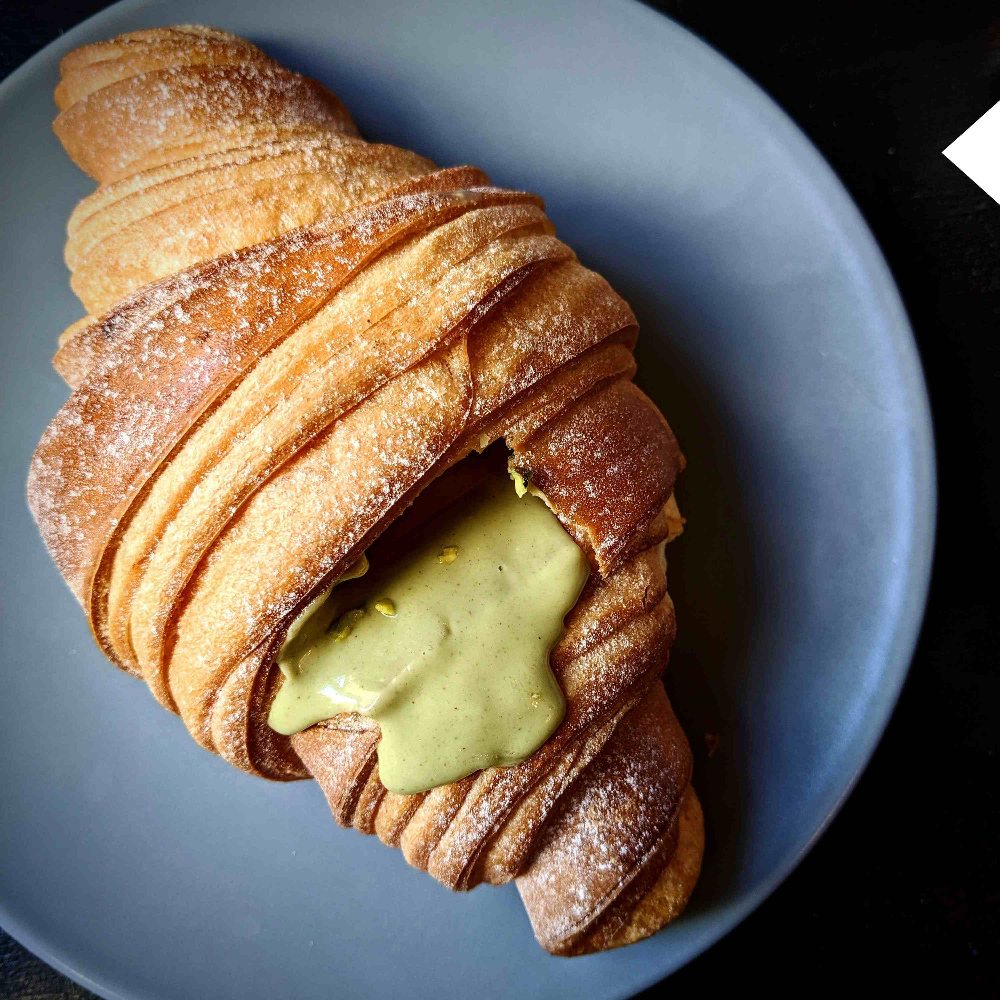
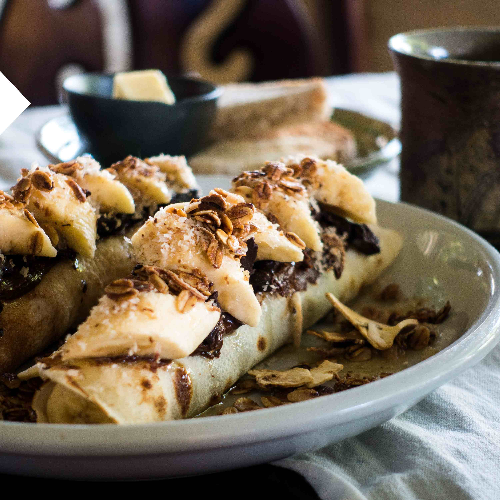
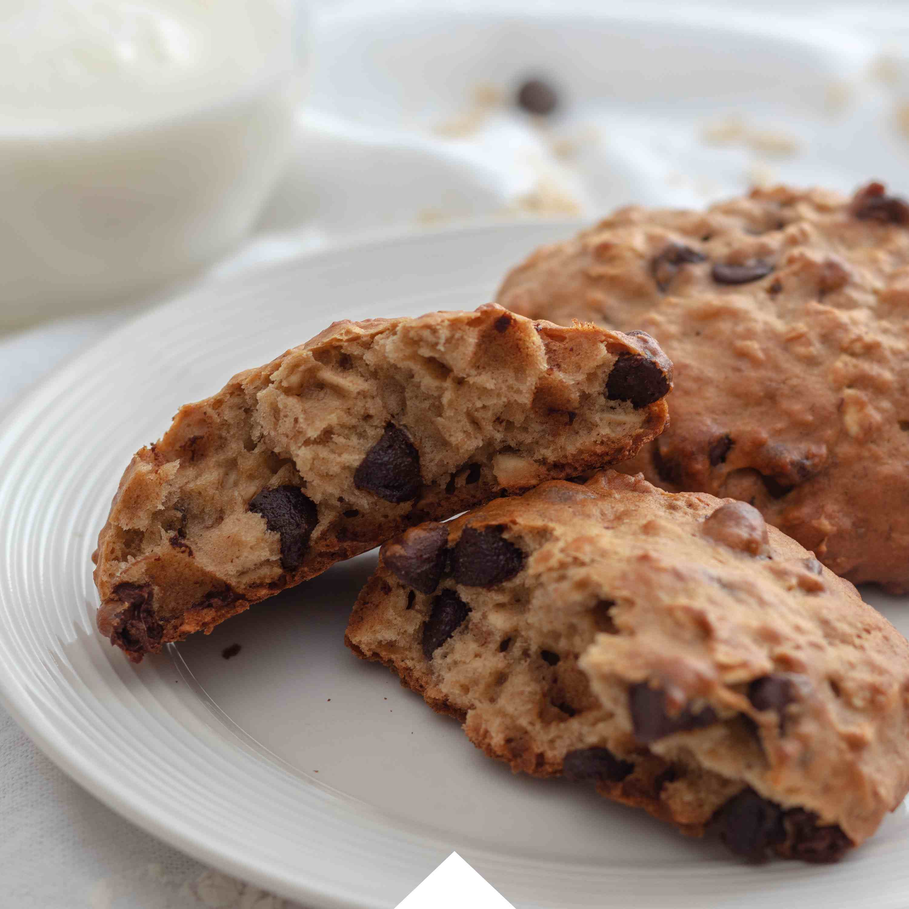

Find Your Best Food

T A C O
墨西哥卷饼(Taco),是墨西哥的传统食品，用玉米粉制作墨西哥薄饼（tortilla），卷成U字型后，烤制。 将已熟的肉馅、蔬菜、芝士酱等馅料配搭一起食用。 烤牛肉、鸡肉、猪肉、鱼虾、通心粉、蔬菜、奶酪甚至昆虫都可以作为墨西哥卷饼的配料。
LEARN MORE>>
C R O I S S A N T
法式可颂，一般做成牛羊角的形状，因而也被很多人成为牛角包或羊角包，是法国最有名的面包之一。 可颂造型弯弯就像羊角，外皮酥脆，内心层次丰富柔软，既可以直接吃，也可以切开夹上火腿蔬菜一块儿食用，咬一口下去还有浓浓的奶香，十分美味。
LEARN MORE>>


C O O K I E S
曲奇，来源于英语COOKIES的香港音译，意为“细小的蛋糕”最初由伊朗发明，上世纪80年代，曲奇由欧美传入中国，并在21世纪初在香港、澳门、台湾等地掀起热潮，随之不断流行开来。
<<LEARN MORE